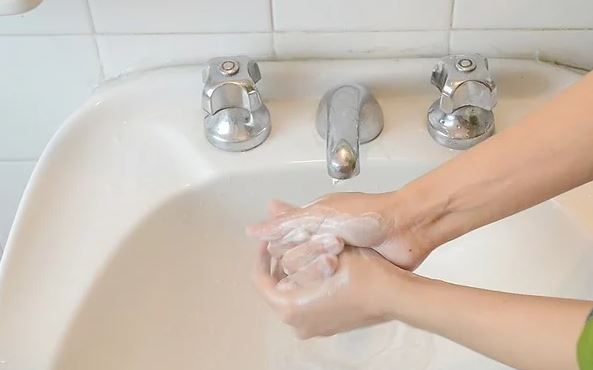
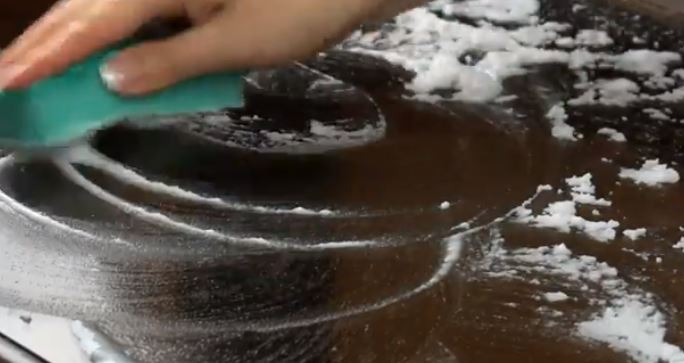
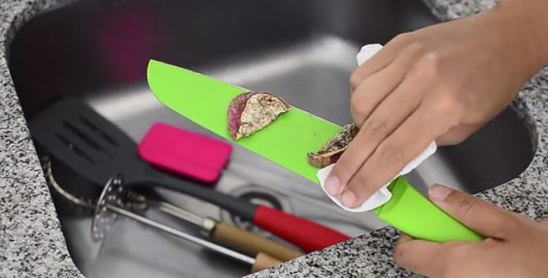

<div class="module-content-container">
  <mat-tab-group animationDuration="2000ms" mat-align-tabs="center">
    <mat-tab label="Module Introduction" #matgroup>
      <div class="module-introduction-content">
        <h1>Sanatizing Your Workplace</h1>
        <div class="module-introduction-text">
          <p>
            This training Module entails basic hygeine practices that are common throughout
            the kitchen of The Food Works. We will run you through several basic steps to take
            before entering the workspace, as well as show you tips and tricks on how to keep
            the environment safe for everyones peace of mind.
          </p>
          <div class="module-introduction-icons">
            <mat-icon>schedule</mat-icon>15 Minutes
            <mat-icon class="content">subject</mat-icon>Video, Image and Text
            <mat-icon class="content">language</mat-icon>English
          </div>
          <button mat-stroked-button color="primary" (click)='moveToSelectedTab("Learning Area")'>Begin</button>
          <br>
        </div>
      </div>
    </mat-tab>
    <mat-tab label="Learning Area">
      <div class="module-learning-area-content">
        <mat-card [class.mat-elevation-z8]="isActive">
          <div class="module-mat-card-content">
            <iframe [src]="safeSrc" frameborder="0" webkitallowfullscreen mozallowfullscreen allowfullscreen></iframe>
            <div class="module-mat-card-content-info">
              <div class="card-content-heading">
                <div>
                  <h1>Important Takeaways</h1>
                  <p>
                    Part of being a chef at the food works means that you are
                    expected to uphold a certain standard of excellence. Not
                    only does that come into play with your ability to cook,
                    but also your ability to keep your work space clean and
                    hygeinic for all of those around you. As seen in the video
                    above, several practices should be common place in the kitchen.
                    Everyone needs to follow them. As part of preparing food for
                    someone else, we need to remember that their own health is
                    at risk if we arent careful. There are several steps to take
                    as can be seen below, when entering the kitchen each and
                    every day.
                    <br>
                    <br>
                    <b>Steps:</b>
                  </p>
                  <ol>
                    <li>Always Wash Your Hands</li>
                    <li>Sanatize Your Counter</li>
                    <li>Clean Your Utensils</li>
                  </ol>
                  <p>
                    After ensuring that the above has been adhered to, as a chef
                    you may begin prepping the first meal of the day. Please
                    refer to the images below for an illustrative view on the above
                    listed steps. Once you feel you have grasped a thourough
                    understanding of the concepts discussed in this lecture module,
                    you may proceed by selecting the finish option at the bottom of
                    the page, and thereafter selecting the reviewed option on the
                    following page.
                  </p>
                </div>
              </div>
              <div class="card-content-image">
                <mat-grid-list gutterSize="20px" cols="3" rowHeight="1.5:1" class="module-image-grid">
                  <mat-grid-tile>
                    
                    <mat-grid-tile-footer>
                      <h3>Wash Your Hands</h3>
                    </mat-grid-tile-footer>
                  </mat-grid-tile>
                  <mat-grid-tile>
                    
                    <mat-grid-tile-footer>
                      <h3>Wash Your Counter</h3>
                    </mat-grid-tile-footer>
                  </mat-grid-tile>
                  <mat-grid-tile>
                    
                    <mat-grid-tile-footer>
                      <h3>Wash Your Utensils</h3>
                    </mat-grid-tile-footer>
                  </mat-grid-tile>
                </mat-grid-list>
              </div>
              <button mat-raised-button color="primary" (click)='openDialog()'
                class="button-module-finish">Finish</button>
              <button mat-stroked-button color="primary" (click)='moveToSelectedTab("Module Introduction")'
                class="button-module-later">Complete Later</button>
            </div>
          </div>
        </mat-card>
      </div>
    </mat-tab>
    <mat-tab label="Module Evaluation">
      <div class="module-evaluation-content">
        <div class="module-introduction-content">
          <div>
            <h1>Module Evaluation</h1>
            <mat-list role="list">
              <span>Date and Time Completed:</span>26 January 2021, 17:31<br><br><br>
              <span>Time Elapsed:</span>23 Minutes 18 Seconds<br>
              <button mat-stroked-button color="primary">Return</button>
            </mat-list>
          </div>
        </div>
      </div>
    </mat-tab>
  </mat-tab-group>
</div>
